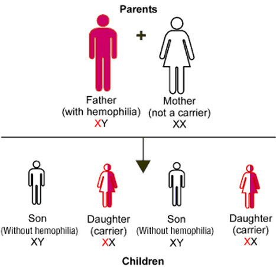
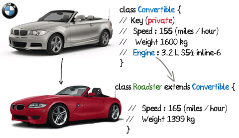
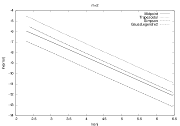
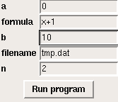

OO is a Norwegian invention by Ole-Johan Dahl and Kristen Nygaard in the 1960s - one of the most important inventions in computer science, because OO is used in all big computer systems today!
Make a class for evaluating lines \( y=c_0 + c_1x \).
class Line:
def __init__(self, c0, c1):
self.c0, self.c1 = c0, c1
def __call__(self, x):
return self.c0 + self.c1*x
def table(self, L, R, n):
"""Return a table with n points for L <= x <= R."""
s = ''
for x in linspace(L, R, n):
y = self(x)
s += '%12g %12g\n' % (x, y)
return s
Make a class for evaluating parabolas \( y=c_0 + c_1x + c_2x^2 \).
class Parabola:
def __init__(self, c0, c1, c2):
self.c0, self.c1, self.c2 = c0, c1, c2
def __call__(self, x):
return self.c2*x**2 + self.c1*x + self.c0
def table(self, L, R, n):
"""Return a table with n points for L <= x <= R."""
s = ''
for x in linspace(L, R, n):
y = self(x)
s += '%12g %12g\n' % (x, y)
return s
This is almost the same code as class Line, except for the things with c2
Parabola code = Line code + a little extra with the \( c_2 \) termLine code in class Parabola?
class Parabola(Line):
pass
makes Parabola inherit all methods and attributes from Line, so Parabola has attributes c0 and c1 and three methods
Line is a superclass, Parabola is a subclass Parabola must add code to Line's constructor (an extra c2 attribute), __call__ (an extra term), but table can be used unalteredLine as possible and avoid duplicating code
A subclass method can call a superclass method in this way:
superclass_name.method(self, arg1, arg2, ...)
Class Parabola as a subclass of Line:
class Parabola(Line):
def __init__(self, c0, c1, c2):
Line.__init__(self, c0, c1) # Line stores c0, c1
self.c2 = c2
def __call__(self, x):
return Line.__call__(self, x) + self.c2*x**2
What is gained?
Parabola just adds code to the already existing code in class Line - no duplication of storing c0 and c1, and computing \( c_0+c_1x \)Parabola also has a table method - it is inherited__init__ and __call__ are overridden or redefined in the subclass
p = Parabola(1, -2, 2)
p1 = p(2.5)
print p1
print p.table(0, 1, 3)
Output:
8.5
0 1
0.5 0.5
1 1
isinstance(obj, type) and issubclass(subclassname, superclassname)
>>> from Line_Parabola import Line, Parabola
>>> l = Line(-1, 1)
>>> isinstance(l, Line)
True
>>> isinstance(l, Parabola)
False
>>> p = Parabola(-1, 0, 10)
>>> isinstance(p, Parabola)
True
>>> isinstance(p, Line)
True
>>> issubclass(Parabola, Line)
True
>>> issubclass(Line, Parabola)
False
>>> p.__class__ == Parabola
True
>>> p.__class__.__name__ # string version of the class name
'Parabola'
Line be a subclass of Parabola?
class Parabola:
def __init__(self, c0, c1, c2):
self.c0, self.c1, self.c2 = c0, c1, c2
def __call__(self, x):
return self.c2*x**2 + self.c1*x + self.c0
def table(self, L, R, n):
"""Return a table with n points for L <= x <= R."""
s = ''
for x in linspace(L, R, n):
y = self(x)
s += '%12g %12g\n' % (x, y)
return s
class Line(Parabola):
def __init__(self, c0, c1):
Parabola.__init__(self, c0, c1, 0)
Note: __call__ and table can be reused in class Line!
class Derivative:
def __init__(self, f, h=1E-5):
self.f = f
self.h = float(h)
def __call__(self, x):
f, h = self.f, self.h # make short forms
return (f(x+h) - f(x))/h
def f(x):
return exp(-x)*cos(tanh(x))
from math import exp, cos, tanh
dfdx = Derivative(f)
print dfdx(2.0)
$$ \begin{align*} f'(x) &= \frac{f(x+h)-f(x)}{h} + {\cal O}(h)\\ f'(x) &= \frac{f(x)-f(x-h)}{h} + {\cal O}(h)\\ f'(x) &= \frac{f(x+h)-f(x-h)}{2h} + {\cal O}(h^2)\\ f'(x) &= \frac{4}{3}\frac{f(x+h)-f(x-h)}{2h} -\frac{1}{3}\frac{f(x+2h) - f(x-2h)}{4h} + {\cal O}(h^4)\\ f'(x) &= \frac{3}{2}\frac{f(x+h)-f(x-h)}{2h} -\frac{3}{5}\frac{f(x+2h) - f(x-2h)}{4h} + \nonumber\\ & \frac{1}{10}\frac{f(x+3h) - f(x-3h)}{6h} + {\cal O}(h^6)\\ f'(x) &= \frac{1}{h}\left( -\frac{1}{6}f(x+2h) + f(x+h) - \frac{1}{2}f(x) - \frac{1}{3}f(x-h)\right) + {\cal O}(h^3) \end{align*} $$
class Forward1:
def __init__(self, f, h=1E-5):
self.f = f
self.h = float(h)
def __call__(self, x):
f, h = self.f, self.h
return (f(x+h) - f(x))/h
class Backward1:
def __init__(self, f, h=1E-5):
self.f = f
self.h = float(h)
def __call__(self, x):
f, h = self.f, self.h
return (f(x) - f(x-h))/h
class Central2:
# same constructor
# put relevant formula in __call__
All the constructors are identical so we duplicate a lot of code.
__call__
class Diff:
def __init__(self, f, h=1E-5):
self.f = f
self.h = float(h)
class Forward1(Diff):
def __call__(self, x):
f, h = self.f, self.h
return (f(x+h) - f(x))/h
class Central4(Diff):
def __call__(self, x):
f, h = self.f, self.h
return (4./3)*(f(x+h) - f(x-h)) /(2*h) - \
(1./3)*(f(x+2*h) - f(x-2*h))/(4*h)
Interactive example: \( f(x)=\sin x \), compute \( f'(x) \) for \( x=\pi \)
>>> from Diff import *
>>> from math import sin
>>> mycos = Central4(sin)
>>> # compute sin'(pi):
>>> mycos(pi)
-1.000000082740371
Central4(sin) calls inherited constructor in superclass, while mycos(pi) calls __call__ in the subclass Central4
Suppose we want to differentiate function expressions from the command line:
Terminal> python df.py 'exp(sin(x))' Central 2 3.1
-1.04155573055
Terminal> python df.py 'f(x)' difftype difforder x
f'(x)
With eval and the Diff class hierarchy this main program can be realized in a few lines (many lines in C# and Java!):
import sys
from Diff import *
from math import *
from scitools.StringFunction import StringFunction
f = StringFunction(sys.argv[1])
difftype = sys.argv[2]
difforder = sys.argv[3]
classname = difftype + difforder
df = eval(classname + '(f)')
x = float(sys.argv[4])
print df(x)
. h Forward1 Central2 Central4
6.25E-02 -2.56418286E+00 6.63876231E-01 -5.32825724E-02
3.12E-02 -1.41170013E+00 1.63556996E-01 -3.21608292E-03
1.56E-02 -7.42100948E-01 4.07398036E-02 -1.99260429E-04
7.81E-03 -3.80648092E-01 1.01756309E-02 -1.24266603E-05
3.91E-03 -1.92794011E-01 2.54332554E-03 -7.76243120E-07
1.95E-03 -9.70235594E-02 6.35795004E-04 -4.85085874E-08
Observations:
Central4 has really superior accuracy compared with Forward1
These techniques are beyond scope in the course, but place OO into a bigger perspective. Might better clarify what OO is - for some.
There are numerous formulas for numerical integration and all of them can be put into a common notation: $$ \int_a^b f(x)dx \approx \sum_{i=0}^{n-1} w_i f(x_i)$$ \( w_i \): weights, \( x_i \): points (specific to a certain formula)
The Trapezoidal rule has \( h=(b-a)/(n-1) \) and $$ x_i = a+ih, \quad w_0=w_{n-1}={h\over2},\ w_i=h\ (i\neq 0,n-1)$$
The Midpoint rule has \( h=(b-a)/n \) and $$ x_i = a + {h\over 2} + ih,\quad w_i=h$$
Simpson's rule has $$ \begin{align*} x_i &= a+ih,\quad h={b-a\over n-1}\\ w_0 &=w_{n-1}={h\over6}\\ w_i &= {h\over3}\hbox{ for }i\hbox{ even},\quad w_i={2h\over3}\hbox{ for }i\hbox{ odd} \end{align*} $$
Other rules have more complicated formulas for \( w_i \) and \( x_i \)
integrate method evaluates the formulaintegrate)construct_rule
class Integrator:
def __init__(self, a, b, n):
self.a, self.b, self.n = a, b, n
self.points, self.weights = self.construct_method()
def construct_method(self):
raise NotImplementedError('no rule in class %s' % \
self.__class__.__name__)
def integrate(self, f):
s = 0
for i in range(len(self.weights)):
s += self.weights[i]*f(self.points[i])
return s
def vectorized_integrate(self, f):
# f must be vectorized for this to work
return dot(self.weights, f(self.points))
class Trapezoidal(Integrator):
def construct_method(self):
h = (self.b - self.a)/float(self.n - 1)
x = linspace(self.a, self.b, self.n)
w = zeros(len(x))
w[1:-1] += h
w[0] = h/2; w[-1] = h/2
return x, w
class Simpson(Integrator):
def construct_method(self):
if self.n % 2 != 1:
print 'n=%d must be odd, 1 is added' % self.n
self.n += 1
<code for computing x and w>
return x, w
Let us integrate \( \int_0^2 x^2dx \) using 101 points:
def f(x):
return x*x
method = Simpson(0, 2, 101)
print method.integrate(f)
Important:
method = Simpson(...): this invokes the superclass constructor, which calls construct_method in class Simpsonmethod.integrate(f) invokes the inherited integrate method, defined in class Integrator
We can empirically test out the accuracy of different integration methods Midpoint, Trapezoidal, Simpson, GaussLegendre2, ... applied to, e.g.,
$$ \int\limits_0^1 \left(1 + {1\over m}\right)t^{1\over m} dt= 1$$
Simpson and Gauss-Legendre reduce the error faster than Midpoint and Trapezoidal (plot has ln(error) versus \( \ln n \))
Simpson and Gauss-Legendre, which are theoretically "smarter" than Midpoint and Trapezoidal do not show superior behavior!

Collection of difference formulas for \( f'(x) \). For example, $$ f'(x) \approx {f(x+h)-f(x-h)\over 2h}$$
Superclass Diff contains common code (constructor), subclasses implement various difference formulas.
class Diff:
def __init__(self, f, h=1E-5):
self.f = f
self.h = float(h)
class Central2(Diff):
def __call__(self, x):
f, h = self.f, self.h
return (f(x+h) - f(x-h))/(2*h)
General integration formula for numerical integration: $$ \int_a^b f(x)dx \approx \sum_{j=0}^{n-1} w_if(x_i)$$
Superclass Integrator contains common code (constructor, \( \sum_j w_if(x_i) \)), subclasses implement definition of \( w_i \) and \( x_i \).
class Integrator:
def __init__(self, a, b, n):
self.a, self.b, self.n = a, b, n
self.points, self.weights = self.construct_method()
def integrate(self, f):
s = 0
for i in range(len(self.weights)):
s += self.weights[i]*f(self.points[i])
return s
class Trapezoidal(Integrator):
def construct_method(self):
x = linspace(self.a, self.b, self.n)
h = (self.b - self.a)/float(self.n - 1)
w = zeros(len(x)) + h
w[0] /= 2; w[-1] /= 2 # adjust end weights
return x, w
outfile = open(filename, 'w')
from numpy import linspace
for x in linspace(a, b, n):
outfile.write('%12g %12g\n' % (x, f(x)))
outfile.close()
Read a, b, n, filename and a formula for f from...
a=0, b=2, filename=mydat.dat
a = 0
b = 2
filename = mydat.dat

from ReadInput import *
# define all input parameters as name-value pairs in a dict:
p = dict(formula='x+1', a=0, b=1, n=2, filename='tmp.dat')
# read from some input medium:
inp = ReadCommandLine(p)
# or
inp = PromptUser(p) # questions in the terminal window
# or
inp = ReadInputFile(p) # read file or interactive commands
# or
inp = GUI(p) # read from a GUI
# load input data into separate variables (alphabetic order)
a, b, filename, formula, n = inp.get_all()
# go!
ReadInput stores the dict and provides methods for getting input into program variables (get, get_all)ReadCommandLine, PromptUser, ReadInputFile, GUIReadInput.py for implementation details